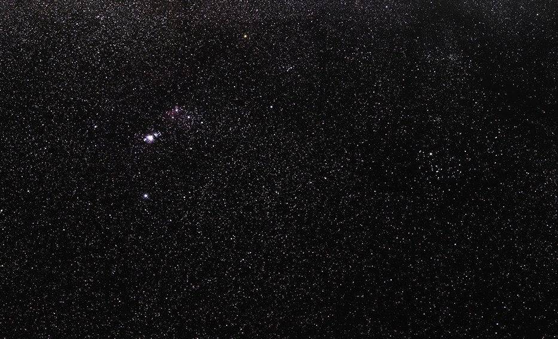

DESI Legacy Surveys · archive, years before the event
i
DESI Legacy Imaging Surveys DR10 colour cutout, 3′ around SN 2026abvs (SN IIn). Archive image taken years before the event.
DESI Legacy Imaging Surveys DR10, colour HiPS by CDS; cut with CDS hips2fits
CC BY 4.0 (Legacy Surveys; acknowledgement required)
The supernova itself is not in this picture; its host galaxy is.
Source ↗Supernova · type IIn
SN 2026abvs
25 Sep 2026, 11:49 UTC · TNS · official report
- Reported
- 4 h ago
- In
- Orion
- Position
- 04h52m +05°09′

Where it is · ESO/S. Brunier
i
How we knowTNS report
The Transient Name Server lists SN 2026abvs in the galaxy PGC016212 at redshift 0.029 as a SN IIn, classified from its spectrum by GOTO. It was first seen on 14 Sep 2026 by GOTO, ZTF.
About the pictureArchive
DESI Legacy Imaging Surveys DR10 colour cutout, 3′ around SN 2026abvs (SN IIn). Archive image taken years before the event.. DESI Legacy Imaging Surveys DR10, colour HiPS by CDS; cut with CDS hips2fits.